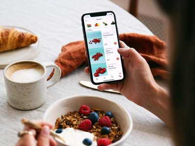
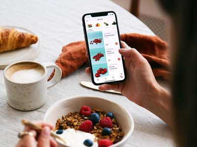
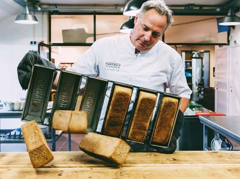
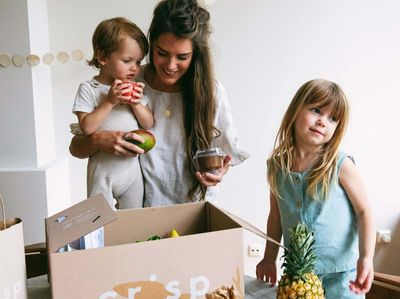

Voor 22:00
Kies je boodschappen
- Alleen van de beste makers en telers, dus altijd goed
- Bestel vanaf €50
- Morgen in huis, waar je ook woont
Voor 22:00
Vanaf 04:00
Vanaf 18:00

Van de familie Buys
2 . 99Beste boerderijzuivel van Nederland
1 . 19Duurzaam en vers uit Noorwegen (±240g)
6 . 99Puur en vers gemaakt
3 . 99Meer uit het assortiment
Sun Tieskuh
Vlees van de slager, groente van de groenteboer, vis van de visboer en delicatessen van een traiteur, maar dan in 1 online supermakt. Top!
Carien N
Deze app gebruik ik bijna dagelijks om verse producten toe te voegen aan mijn winkelmandje. Crisp levert topproducten, fantastische service en is erg flexibel/makkelijk!
Max M
Overzichtelijk en fijn om mee te werken. Producten zijn qua prijs/kwaliteit verhouding uitmuntend!
Een paar dingen veranderen gelukkig niet: iedereen is welkom en er is geen wachttijd als je voor het eerst boodschappen wilt doen. Wél een beetje anders is de bezorging. Voorlopig zetten we je bestelling zonder contact voor de deur. De bezorger belt aan en wacht op veilige afstand. Je brengt dus zelf je boodschappen naar binnen. Achter de schermen doen we ook alles volgens de RIVM richtlijnen en onze eigen hoge hygiëne-standaarden. We werken zo veel mogelijk vanuit huis, beperken externe contacten en ontsmetten onze handen. Je groente en fruit verpakken we altijd met handschoenen aan, en de doos waarin je boodschappen worden vervoerd, wordt eenmalig gebruikt. We nemen onze verantwoordelijkheid om mensen te voorzien van goed en gezond eten heel serieus. Daar kun je ook nu op vertrouwen.
Wij vinden het belangrijk dat je weet waar je eten vandaan komt, en dat er zo min mogelijk schakels en bewerkingen zitten tussen jou en degene die je voedsel produceert. Dus kopen we rechtstreeks in bij de boer, de bakker, de visafslag en de worstenmaker. Zo weet je zeker dat ‘vers’ echt vers is. Dat de makers een eerlijke prijs krijgen. En dat het helemaal niet zo ingewikkeld is om meer met de seizoenen mee te eten. Natuurlijk is dat in veel opzichten beter, maar vooral gewoon veel lekkerder.
Nee, niet alle producten zijn biologisch. De kwaliteit en versheid van wat we verkopen staat voorop. Voor sommige producten geldt dat biologisch dan de beste keuze is. Als iets (gecertificeerd) biologisch is, dan zie je dat bij de productinformatie in de app. Maar er zijn genoeg producten die zonder dat label óók goed in elkaar zitten en top smaken. Veel van onze telers zitten in Nederland en daardoor weten we goed wat zij doen om ervoor te zorgen dat ze kwalitatief mooie producten aan ons kunnen leveren. Een bio-keurmerk is niet voor iedere teler haalbaar, omdat hier ook kosten en administratief werk aan te pas komen, maar dit betekent niet dat ze minder goede standaarden hebben.
Nee. Je winkelt bij ons net zoals in een ‘gewone’ supermarkt en rekent per keer af. Er is dus geen enkele verplichting om bij ons te bestellen. Al hopen we natuurlijk dat je zo blij bent met je producten dat we je vaker terug zien.
We bezorgen van maandag tot en met vrijdag tussen 17.00 en 22.00 uur. In een deel van de Randstad bezorgen we ook in het weekend en kun je kiezen voor kortere tijdvakken. In de app zie je welke bezorgmomenten en-tijden beschikbaar zijn voor jouw adres. Zodra de bezorger onderweg is, krijg je van ons ook nog een 'track & trace' link. Zo weet je precies hoe laat we écht voor je deur staan.
Jazeker! We vinden dat iedereen in Nederland lekker, goed én vers moet kunnen eten, en daarom bezorgen we in heel Nederland met uitzondering van de Waddeneilanden. Overal geldt: vandaag voor 22.00 uur besteld, morgenavond in huis.
Een standaardbezorging kost € 2,95. Bestel je voor meer dan 75 euro? Dan bezorgen we gratis. In een deel van de Randstad kun je tegen een kleine meerprijs ook voor een korter tijdvak kiezen.
Door een minimumbedrag van 50 euro per bestelling te hanteren kunnen we de bezorgkosten laag houden en de bezorging efficiënt organiseren.
Het liefst wel. Veel van onze producten zijn gekoeld of bevroren, dus die kunnen het best snel de koelkast of de vriezer in. Met de track & trace informatie die we je sturen, zie je precies hoe laat we er zullen zijn. Je kunt in je account ook een opmerking voor de bezorger toevoegen indien je er niet bent, de bezorger kan dit dan altijd opvolgen. Ben je onverwachts niet thuis op de dag van bezorging? Geef jouw opmerking dan door aan ons serviceteam zodat we de bezorger op de hoogte kunnen stellen.
Snel naar de app